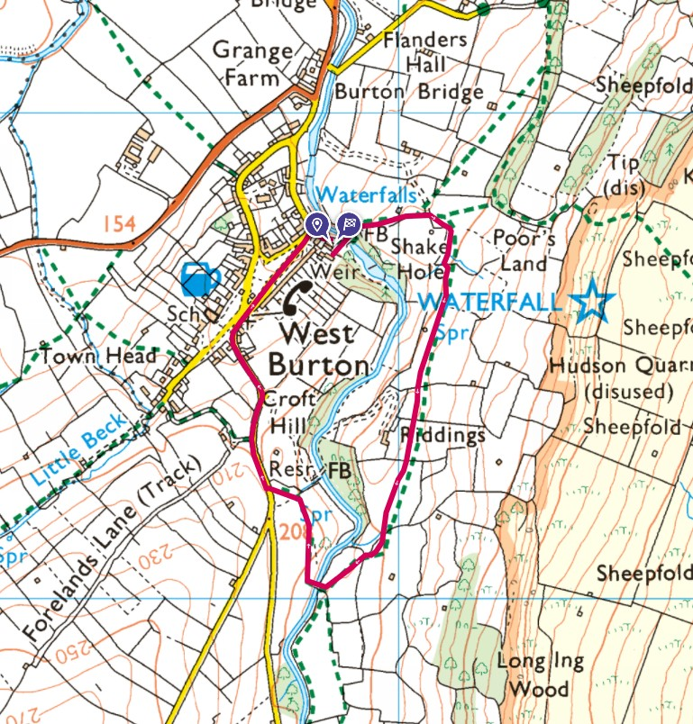

A nice little roadtrip to West Burton in Wensleydale with a waterfall, picnic and a short loop back to Tiggy.
This is the short loop we did.

Some info on the waterfall.

We left Tiggy by the bridge, near the waterfall.

Next to the parking spots is this bridge, we'll be crossing this later as part of our walk.


Then we crossed the bridge and headed through a small gate, uphill, to a field for our picnic and these views.


I think Ruby enjoyed the picnic more than the views.

We then headed south through some fields, past some cows until we crossed the river where we then turned north to head back to West Burton and Tiggy.